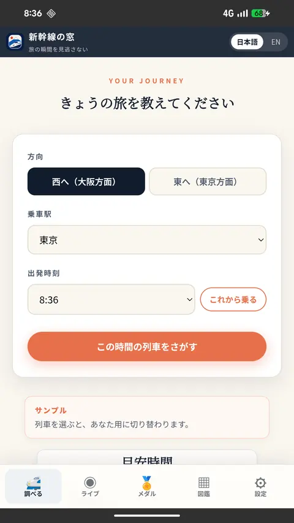
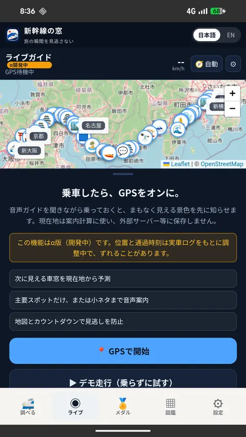
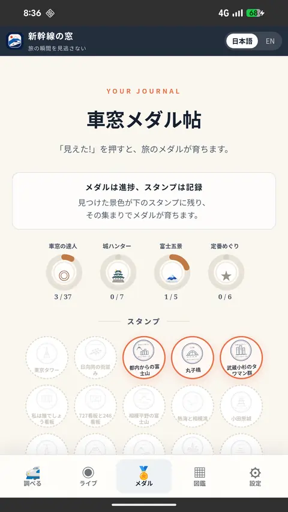

ANDROID APP
Shinkansen Window is on Google Play
Open Shinkansen Window straight from your Android home screen. Train search, the live guide, field guide, and Window Stamp journal all stay together in one app. It is free and needs no account.
Shinkansen Window
Android app / Google Play · free · no registration
SCREENS
Inside the app



Screens are from the version available when this page was updated and are shown in Japanese; the app also has an English mode.
GET THE APP
Start in one step
Install from Google Play
No tester registration or Google Group is required. Open the store on your Android device and install the public app.
View Shinkansen Window on Google PlayWHY THE APP
How it differs from the web version
- One tap from your home screen. It does not get buried in browser tabs or history, so it is there right before you board.
- Everything stays in the app. Moving between train search, the field guide and the journal never throws you back into a browser.
- It keeps working where the signal drops. The content it needs is stored on the device, so tunnels and mountain sections are less likely to stall it.
- The GPS live guide works the same. It counts down to the next view based on where you are.
NOTES
Before you start
- You need an Android phone with Google Play. There is no iPhone version at the moment.
- The app is free and does not require account registration.
- Location data is used only to calculate guidance and is not stored on external servers. See the privacy policy for details.
- The web version also stays free to use.
CONTACT
Support and feedback
This is an independently run project, so replies may take time. Including your device and what happened will help us investigate.